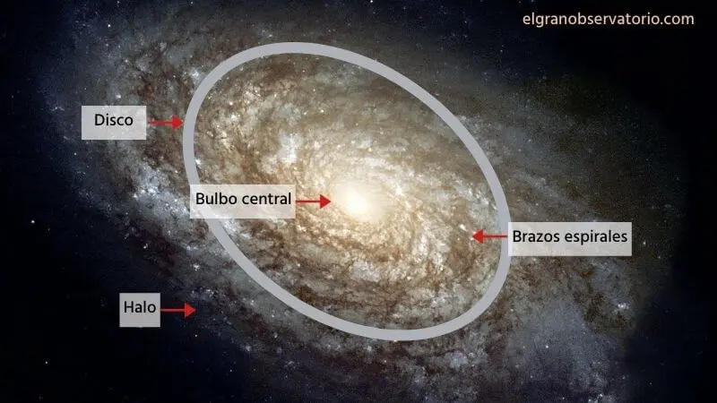
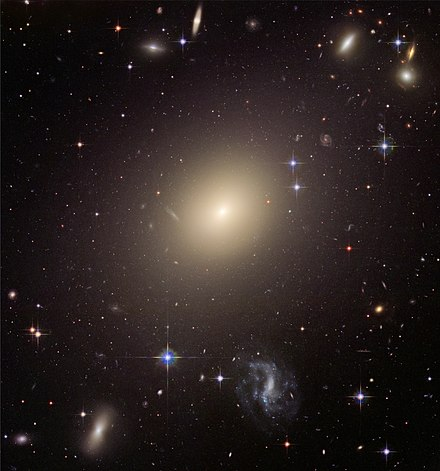
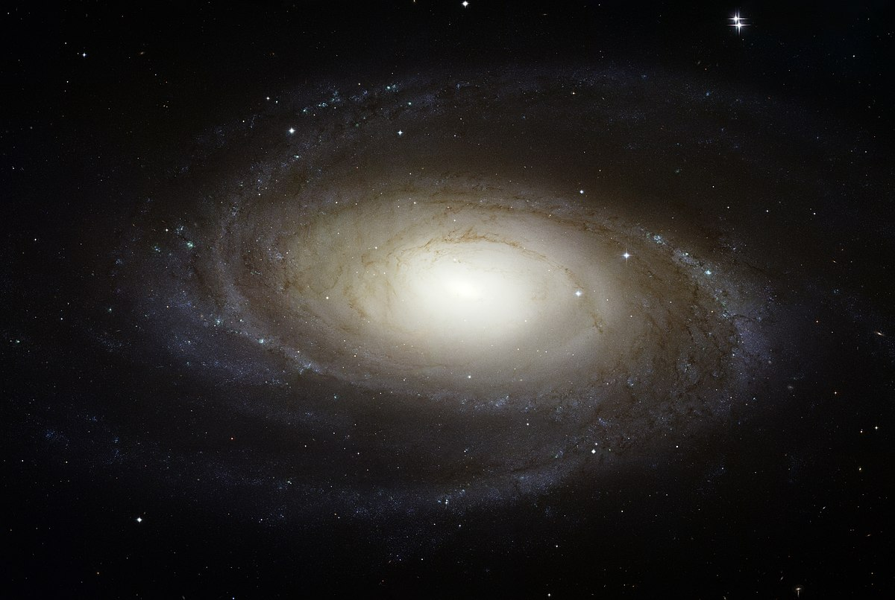
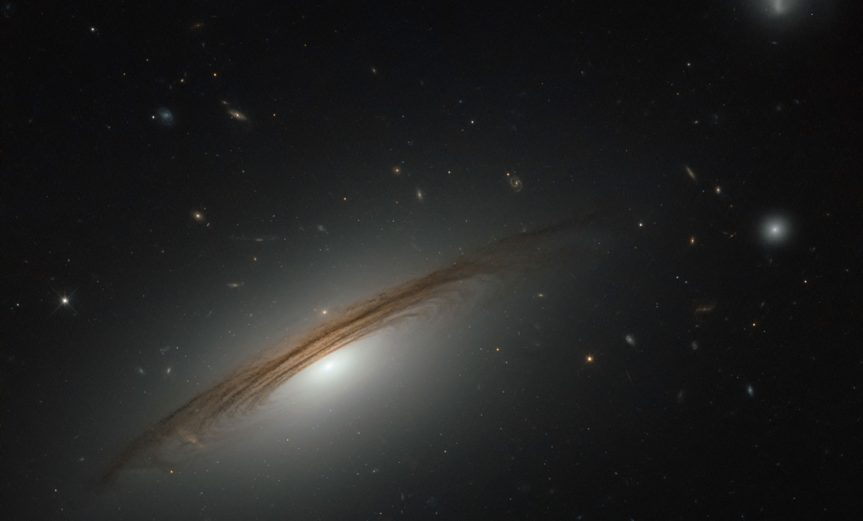
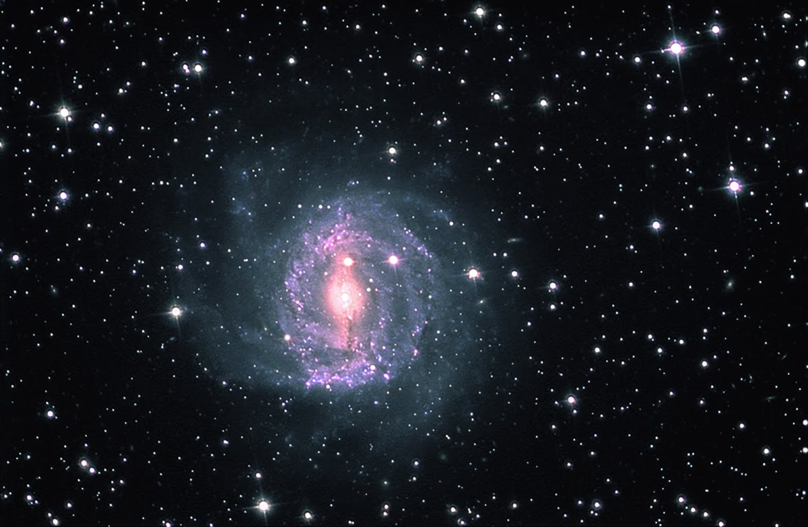

GALAXIAS
¿Que es una galaxia?
Una galaxia es una enorme colección de gas, polvo y miles de millones de estrellas unidas entre si por la gravedad que ejercen unas sobre otras. en el universo hay muchas galaxias, tanto asi que no se sabe cuantas. Los astrónomos estiman que podría haber cien mil millones
¿Cuales son las partes de una Galaxia?

Bulbo o núcleo galáctico
Es una zona que se ubica en el centro de la galaxia, es la región de mayor densidad de estrellas
Disco galáctico
Es la zona que contiene mayor cantidad de gas y estrellas jóvenes, también es donde se produce la formación de nuevas estrellas
Halo
Zona que envuelve la galaxia, tiene poco contenido de estrellas y de nubes de gas
Cúmulos Globulares
Zonas de densidad superior ubicadas en el Halo, sus estrellas son tan antiguas que se cree que se formaron cuando aún las galaxias eran solo nubes de gases
¿Cuales son los tipos de galaxias?

Galaxias Elípticas
Se caracterizan por tener forma de esfera alargada y un núcleo brillante. Tienen gran cantidad de estrellas viejas y pocas zonas de polvo y formación de estrellas

Galaxias Espirales
Se caracterizan por ser discos achatados que contienen estrellas viejas y jovenes, así como zonas de gas, polvo y nubes donde nacen nuevas estrellas

Galaxias Lenticulares
Tienen forma de disco, sin embargo, son una clasificación intermedia entre las galaxias espirales y elípticas

Galaxias Irregulares
No poseen estructura regular o simétrica, esto es debido a que se ubican cerca de galaxias mas grandes cuya gravedad afecta su forma
¿Que galaxias conocemos?
Vía Láctea (Aqui vivimos!!!)
Andrómeda
Pequeña Nube de Magallanes
Gran Nube de Magallanes
¿Las galaxias de mueven?
Las estrellas dentro de una galaxia no son inmóviles, estan en constante movimiento alrededor del centro de la galaxia
¿Sabias?
El Sol tarda 250 millones de años en dar la vuelta completa alrededor del núcleo de la Vía Láctea